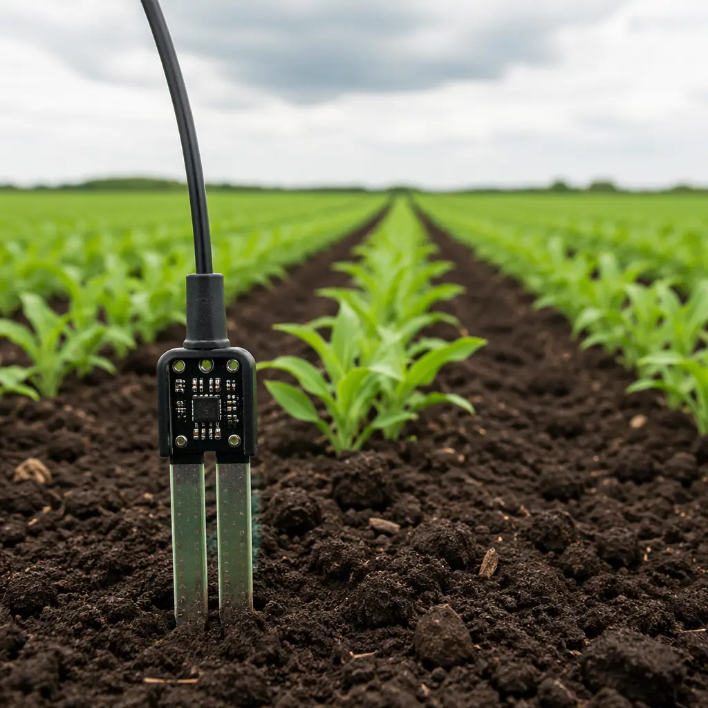
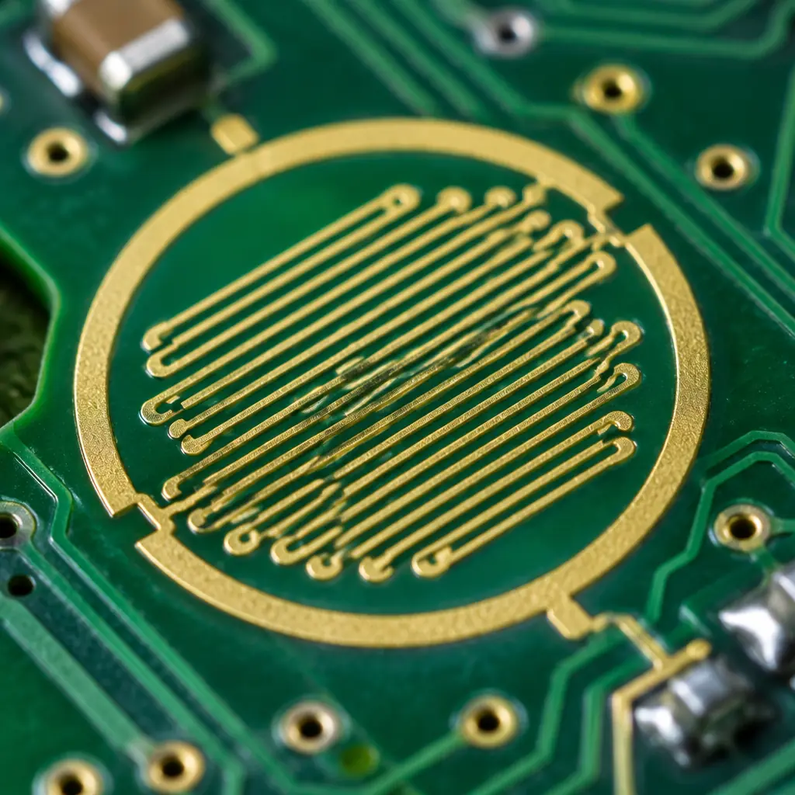
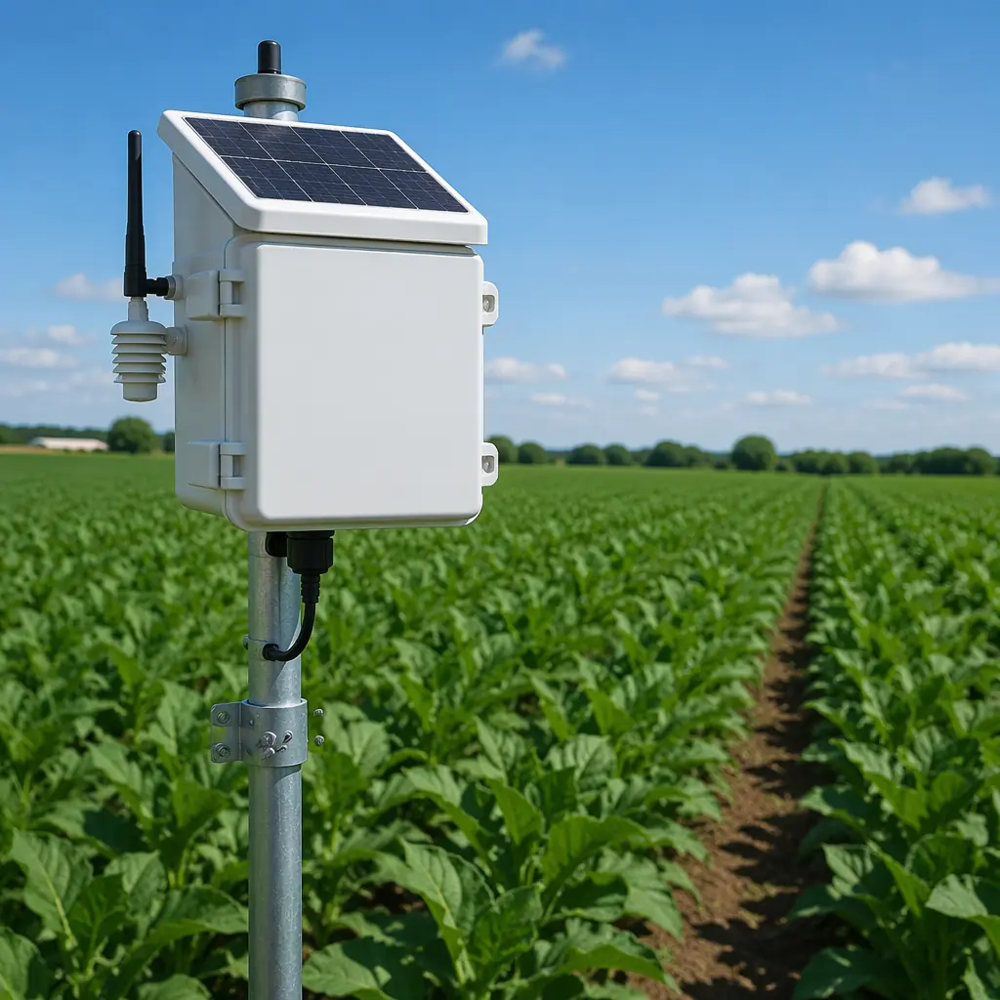

The global precision farming market is projected to reach $23 billion by 2030, driven by soil sensors, weather stations, drone-mounted multispectral cameras, livestock trackers, and automated irrigation controllers. Every one of these devices has a PCB at its core — and every one of those PCBs faces conditions that would destroy a consumer electronics board within weeks. Designing for agriculture is not a special case of industrial PCB design. It is its own discipline, with its own rules.

The Environmental Challenge: What Outdoor PCBs Actually Face
An indoor PCB lives at 25°C and 40% RH, give or take. An agricultural PCB cycles between -20°C pre-dawn frost and 65°C direct sun on the same day. It sees condensation every morning, fertilizer chemicals in irrigation water, UV radiation at altitude, and vibration from tractors. Here is what each stressor does to a board:
| Stressor | Failure Mechanism | Design Countermeasure |
|---|---|---|
| Temperature cycling (-20°C to +65°C) | CTE mismatch → solder joint fatigue, pad lifting | TG 170+ laminate, matched-CTE components |
| Condensation / humidity (80-100% RH) | Dendrite growth, CAF, electrochemical migration | Conformal coating (acrylic or parylene), wider trace spacing |
| Fertilizer / chemical exposure | Copper corrosion, connector contact degradation | ENIG finish, gold-plated contacts, sealed connectors |
| UV radiation (outdoor exposure) | Solder mask degradation, silkscreen fading | UV-stable solder mask, opaque enclosure |
| Vibration / mechanical shock | Component detachment, connector fretting | Underfill on BGA, locking connectors, strain relief |
The standard consumer PCB — FR-4 TG 130, HASL finish, no coating — fails within 6-12 months in outdoor agricultural deployment. The agricultural-grade version of the same board — FR-4 TG 170, ENIG finish, acrylic conformal coating, sealed IP67 enclosure — runs for 5-7 years without failure. The bill of materials difference is roughly 15-25%. The field replacement cost of a failed sensor is 10-50× that difference.
Sensor Integration: Building the Data Pipeline from Soil to Cloud
An agricultural IoT node typically measures 3-6 parameters: soil moisture (capacitive or TDR), soil temperature (thermistor or digital), ambient temperature/humidity (I²C sensor), light/PAR (photodiode), and sometimes soil pH or electrical conductivity. Each sensor type imposes different PCB layout constraints.
Capacitive Soil Moisture: Guard Rings Are Not Optional
Capacitive moisture sensing works by measuring the dielectric constant of the soil between two electrodes on the PCB. Stray capacitance from nearby traces, ground planes, or even the PCB substrate itself can swamp the soil signal. PCB rule: surround the sensing electrodes with an active guard ring driven at the same potential as the sensor input. Keep digital traces (I²C, SPI) at least 5mm away from the analog front-end. Use a separate ground pour for the analog section, connected to digital ground at exactly one point under the ADC.
Analog Front-End: Low-Speed, High-Precision Layout
Soil parameters change over hours, not microseconds. Your ADC can sample at 1 Hz and still capture every agronomically relevant event. This means you can use heavy analog filtering — RC low-pass with a 10 Hz cutoff is completely appropriate — to reject 50/60 Hz mains hum and RF interference. Layout rule: place the ADC as close as possible to the sensor connector. Keep the analog path under 20mm total length. Surround with a guard trace tied to VREF/2.
Sensor Connector Strategy: Assume Replacement
In consumer electronics, you solder the sensor to the board and ship it. In agriculture, sensors fail — a pH probe wears out, a soil moisture electrode corrodes. PCB rule: every external sensor connects through a sealed, keyed connector (M8 or M12 industrial circular, or JST with silicone seal). Never solder sensors directly to the board. The connector itself must be rated IP67 or better when mated.

Power Architecture for Remote Deployments: Battery, Solar, and Ultra-Low-Power Design
An agricultural sensor deployed in a cornfield in Iowa does not have access to mains power. It runs on a battery — typically a 3.6V lithium thionyl chloride (Li-SOCl₂) primary cell with 19,000 mAh capacity — supplemented by a small solar panel (1-5W) if it transmits frequently. The PCB power architecture determines whether that battery lasts 6 months or 6 years.
The power budget for a typical agricultural sensor node:
| State | Current Draw | Duty Cycle | Daily Energy |
|---|---|---|---|
| Deep sleep (MCU + sensors off, RTC only) | 2-5 µA | 99.7% | 0.1 mAh |
| Sensor measurement (60s wake) | 8-15 mA | 0.07% (once/hr) | 0.4 mAh |
| LoRaWAN TX (3s burst at +14 dBm) | 40-120 mA | 0.003% (once/hr) | 0.15 mAh |
| Total daily consumption | ~0.65 mAh/day |
At 0.65 mAh/day, a 19,000 mAh Li-SOCl₂ cell lasts 29,000 days — over 79 years, limited by the battery's own shelf life (10-15 years). In practice, solar charging with a small Li-Po buffer and more frequent transmissions (every 15 minutes instead of hourly) brings the practical field life to 5-8 years.
Connectivity Without Compromise: LoRaWAN vs NB-IoT vs Satellite
An agricultural sensor's connectivity choice determines its PCB layout in fundamental ways — antenna placement, impedance control, ground plane requirements, and EMI isolation from the sensor analog front-end.
| Technology | Range | PCB Implication |
|---|---|---|
| LoRaWAN (868/915 MHz) | 2-15 km (rural) | Sub-GHz antenna: keep-out zone around chip antenna, no ground plane under antenna. 50Ω impedance on RF trace. Simple 2-layer PCB sufficient. |
| NB-IoT / LTE-M (cellular) | Wherever there is cell coverage | Requires SIM (eSIM or nano-SIM holder). Cellular modem draws 500mA+ peak during TX — needs bulk capacitance (100µF+) near modem VCC. 4-layer PCB recommended for controlled impedance. |
| Satellite (Swarm, Iridium) | Global | Patch or helical antenna, clear sky view required. TX power can be 1-2W — needs dedicated power rail and thermal relief. Most expensive option, reserved for truly remote deployments. |
Antenna placement rule for all three: the antenna must be at the board edge, with no copper pours, components, or mounting holes within the antenna keep-out zone (typically 5-10mm in all directions for a chip antenna, larger for PCB trace antennas). The RF trace from the radio to the antenna must be a controlled-impedance microstrip — 50Ω, as short as possible, with continuous ground plane underneath. Avoid routing digital traces parallel to or crossing the RF trace.

PCB Materials and Protection for Year-Round Outdoor Operation
The material stack for an agricultural PCB is more important than for any other IoT application — because the board sees continuous temperature cycling and near-100% humidity for weeks at a time during growing season.
Laminate: TG 170 Minimum
Standard FR-4 (TG 130) softens at 130°C — far above operating temperature, but the glass transition matters because CTE accelerates sharply above TG. During assembly (reflow at 240-260°C), a TG 130 laminate expands significantly more in the Z-axis than TG 170, stressing plated through-holes. After 500 thermal cycles (roughly 18 months of daily outdoor cycling), TG 130 boards show measurable PTH barrel cracking. TG 170 shows none at 1,000 cycles. Spec: Shengyi S1000-2 or equivalent, TG 170+, Td 340°C+.
Surface Finish: ENIG, Not HASL
HASL (hot air solder leveling) produces a slightly uneven surface — fine for 0.8mm pitch components, problematic for 0.5mm BGA or fine-pitch QFN. More importantly in agriculture: the tin-lead or pure tin surface of HASL is more susceptible to corrosion in humid, fertilizer-exposed environments than the nickel-gold barrier of ENIG. Spec: ENIG per IPC-4552, 3-5 µm Ni, 0.05-0.12 µm Au.
Solder Mask: Matte Green, UV-Stable
Glossy solder mask reflects more UV and shows scratches more visibly — not a functional issue, but matte green provides better contrast for AOI during manufacturing and better UV resistance over years of sun exposure. Spec: Taiyo PSR-4000 or equivalent, LPI (liquid photoimageable), matte green.
Conformal Coating: Acrylic for Accessibility, Parylene for Maximum Protection
Acrylic coating (applied by spray or brush, 25-75µm thickness) provides good moisture and chemical resistance at low cost, and can be reworked — important for prototype and low-volume agricultural devices. Parylene (vacuum-deposited, 5-25µm) provides near-perfect moisture barrier but cannot be reworked without mechanical removal. Decision rule: acrylic for field-trial and mid-volume (<10,000 units); parylene for high-volume, long-deployment products where field replacement is impossible.
From Prototype to Field: Testing and Deployment
An agricultural PCB that passes bench testing at 25°C has proven nothing. The real test is a soybean field in July. Before deploying at scale, run these validation steps:
Accelerated Environmental Test
85°C / 85% RH for 1,000 hours (roughly 6 weeks) with the board powered and measuring. This accelerates the failure mechanisms of condensation, corrosion, and dendrite growth. A board that survives 1,000 hours of 85/85 will typically survive 5+ years in a temperate agricultural environment.
Field Pilot: One Full Growing Season
Deploy 10-20 units across different microclimates within the target region. Monitor every unit weekly for data quality and physical condition. The #1 failure in agricultural IoT is not electronics — it is physical ingress: water finds a way into the enclosure through a compromised gasket, a cracked cable gland, or condensation from thermal cycling. Your pilot will expose these before you ship 10,000 units.
EMC: You Are in a Rural Area, But You Still Radiate
Agricultural sensors operate near electric fence controllers, variable-frequency irrigation pump drives, and — increasingly — neighboring LoRaWAN and Wi-Fi networks. Pre-compliance EMC testing (radiated emissions 30 MHz-1 GHz) is not optional. A sensor that interferes with a neighbor's LoRaWAN gateway will generate support tickets faster than any hardware failure.
The precision agriculture PCB market is growing at 12% CAGR — faster than the overall PCB industry. The factories that understand outdoor environmental design, ultra-low-power architecture, and sensor integration will capture this demand. Those that treat agriculture boards as generic industrial PCBs will see field failures and lost customers. The design rules in this article are the difference.